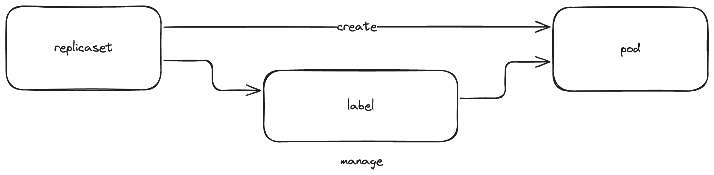
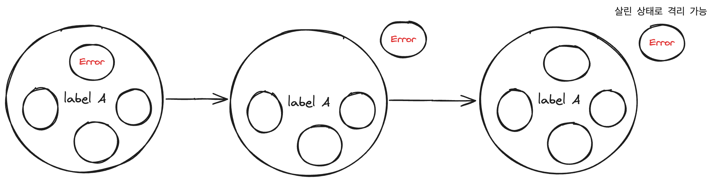

9장. 레플리카 셋
컨테이너의 여러 복제본이 필요한 이유
고가용성
확장성
속도 증가(병렬 처리)
레플리카 셋을 사용해야 하는 이유
휴먼 에러의 감소
파드의 복제본 집합을 명세를 통해 손쉽게 생성하고 관리 가능
조정 루프란?
원하는 상태: 명세
현재 상태: 시스템의 현재 상태
조정 루프의 역할: 현재 상태를 관찰하고 관찰된 상태가 원하는 상태와 일치되도록 동작 시키는 것
노드가 사라지거나 장애가 발생하면 이를 다시 클러스트에 참가시킴
사용자의 요청에 따른 확장과 축소를 처리
파드와 레플리카 셋의 관계

pod와 replicaSet을 분리함으로써 오는 장점1: 기존 container의 수용 가능
label만 맞으면 기존 만들어진 pod를 새로 만들어지는 RS를 통해 관리 가능 기존 Pod
apiVersion: v1
kind: Pod
metadata:
name: existing-pod
labels:
app: my-app
spec:
containers:
- name: nginx
image: nginx
이번에 만든 RS
apiVersion: apps/v1
kind: ReplicaSet
metadata:
name: my-replicaset
spec:
replicas: 3
selector:
matchLabels:
app: my-app
template:
metadata:
labels:
app: my-app
spec:
containers:
- name: nginx
image: nginx
pod와 replicaSet을 분리함으로써 오는 장점2: 컨테이너 격리
단순히 문제가 있는 파드의 라벨을 변경함으로써 문제가 있는 파드를 그대로 남기면서 서비스로의 영향을 최소화 할 수 있다.

레플리카 셋 명세
apiVersion: apps/v1
kind: ReplicaSet
metadata:
labels:
app: kuard
version: "2"
name: kuard
spec:
replicas: 1
selector:
matchLabels: #해당 RS가 어떠한 조건을 가진 pod를 관리하는지, and 조건
app: kuard
version: "2"
template: # 이 아래로 pod template
metadata:
labels:
app: kuard
version: "2"
spec:
containers:
- name: kuard
image: "gcr.io/kuar-demo/kuard-amd64:green"
resources:
requests:
cpu: "500m"
memory: "128Mi"
레플리카 셋 생성 및 확인
➜ newbie git:(main) ✗ kubectl apply -f kuard-rs.yaml
replicaset.apps/kuard created
➜ newbie git:(main) ✗ kubectl get pods
NAME READY STATUS RESTARTS AGE
kuard-5rhp6 1/1 Running 0 10s
레플리카 셋 검사(kubectl describe)
Print a detailed description of the selected resources, including related resources such as events or controllers. You
may select a single object by name, all objects of that type, provide a name prefix, or label selector. For example:
$ kubectl describe TYPE NAME_PREFIX
will first check for an exact match on TYPE and NAME_PREFIX. If no such resource exists, it will output details for
every resource that has a name prefixed with NAME_PREFIX.
➜ newbie git:(main) ✗ kubectl describe rs
Name: kuard
Namespace: default
Selector: app=kuard,version=2
Labels: app=kuard
version=2
Annotations: kubectl.kubernetes.io/last-applied-configuration:
{"apiVersion":"apps/v1","kind":"ReplicaSet","metadata":{"annotations":{},"labels":{"app":"kuard","version":"2"},"name":"kuard","namespace"...
Replicas: 1 current / 1 desired
Pods Status: 1 Running / 0 Waiting / 0 Succeeded / 0 Failed
Pod Template:
Labels: app=kuard
version=2
Containers:
kuard:
Image: gcr.io/kuar-demo/kuard-amd64:green
Port: <none>
Host Port: <none>
Requests:
cpu: 500m
memory: 128Mi
Environment: <none>
Mounts: <none>
Volumes: <none>
Events:
Type Reason Age From Message
---- ------ ---- ---- -------
Normal SuccessfulCreate 12m replicaset-controller Created pod: kuard-5rhp6
ownerReferences란?
한 오브젝트가 다른 오브젝트에 종속되어 있음을 나타내는 필드 값. 특히, 특정 오브젝트가 다른 오브젝트에 의해 생성되었거나 관리되고 있다는 정보를 담고 있으며 종속된 오브젝트가 소유자 오브젝트가 삭제될 때 함께 삭제되도록 보장
목록:
apiVersion: 소유자 오브젝트의 API 버전.
kind: 소유자 오브젝트의 종류 (예: Pod, Deployment 등).
name: 소유자 오브젝트의 이름.
uid: 소유자 오브젝트의 고유 식별자.
controller (optional): 이 값이 true로 설정된 경우, 해당 소유자가 오브젝트의 컨트롤러라는 것을 나타냅니다.
blockOwnerDeletion (optional): 이 값이 true인 경우, 소유자가 삭제되기 전에 해당 오브젝트가 삭제되지 않도록 보장합니다.
newbie git:(main) ✗ kubectl get pods kuard-5rhp6 -o=jsonpath='{.metadata.ownerReferences}'
[map[apiVersion:apps/v1 blockOwnerDeletion:true controller:true kind:ReplicaSet name:kuard uid:cec3608f-f208-4ae8-a597-141f60ae252c]]%
selector에 해당하는 파드 찾기
➜ newbie git:(main) ✗ kubectl get pods --selector app=kuard,version=2
NAME READY STATUS RESTARTS AGE
kuard-5rhp6 1/1 Running 0 27m
확장
명령형 확장(kubectl scale)
➜ newbie git:(main) ✗ kubectl scale replicasets kuard --replicas=4
replicaset.apps/kuard scaled
➜ newbie git:(main) ✗ kubectl get pods --selector app=kuard,version=2
NAME READY STATUS RESTARTS AGE
kuard-5rhp6 1/1 Running 0 28m
kuard-858fr 1/1 Running 0 6s
kuard-ff2rr 1/1 Running 0 6s
kuard-xwx7r 1/1 Running 0 6s
주의: 명령형 확장을 할 때는 파일에 적혀 있는 정보와 실제 파드 수의 상태가 다를 수 있다. 이는 다른 개발자들에게 상황 파악을 어렵게 할 수 있다.
선언형 확장(kubectl apply)
앞에서 이야기했듯 그저 명세를 수정하고 다시 제출한다.
자동 확장(kubectl autoscale)
HPA
CPU, 메모리와 같은 메트릭스를 모니터링하고, 설정된 임계값에 도달하면 자동으로 파드 수를 증가시키거나 감소
이거 도달하면 일꾼 더 투입시켜
apiVersion: autoscaling/v1 kind: HorizontalPodAutoscaler metadata: name: my-hpa spec: scaleTargetRef: apiVersion: apps/v1 kind: Deployment name: my-deployment # 타겟으로 설정할 디플로이먼트 이름 minReplicas: 1 # 최소 파드 수 maxReplicas: 10 # 최대 파드 수 targetCPUUtilizationPercentage: 50 # CPU 사용률 기준
VPA
파드의 리소스를 수직으로 확장하여 애플리케이션이 요구하는 리소스를 더 효과적으로 관리
이거 도달하면 각 파드에 자원 더 넣어줘
apiVersion: autoscaling.k8s.io/v1 kind: VerticalPodAutoscaler metadata: name: my-vpa spec: targetRef: apiVersion: apps/v1 kind: Deployment name: my-deployment # 타겟으로 설정할 디플로이먼트 이름 updatePolicy: updateMode: "Auto" # 자동으로 리소스 조정 (권장값: Auto) resourcePolicy: containerPolicies: - containerName: "*" minAllowed: cpu: 200m # 최소 CPU 리소스 memory: 256Mi # 최소 메모리 리소스 maxAllowed: cpu: 1 # 최대 CPU 리소스 memory: 1Gi # 최대 메모리 리소스
삭제(kubectl delete)
➜ newbie git:(main) ✗ kubectl delete rs kuard
replicaset.apps "kuard" deleted
➜ newbie git:(main) ✗ kubectl get pods
No resources found in default namespace.
➜ newbie git:(main) ✗ kubectl get pods
NAME READY STATUS RESTARTS AGE
kuard-7nr7k 1/1 Running 0 15s
kuard-s776v 1/1 Running 0 15s
See 'kubectl delete --help' for usage.
➜ newbie git:(main) ✗ kubectl delete rs kuard --cascade=false
replicaset.apps "kuard" deleted
➜ newbie git:(main) ✗ kubectl get pods
NAME READY STATUS RESTARTS AGE
kuard-7nr7k 1/1 Running 0 62s
kuard-s776v 1/1 Running 0 62s